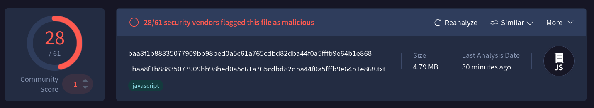
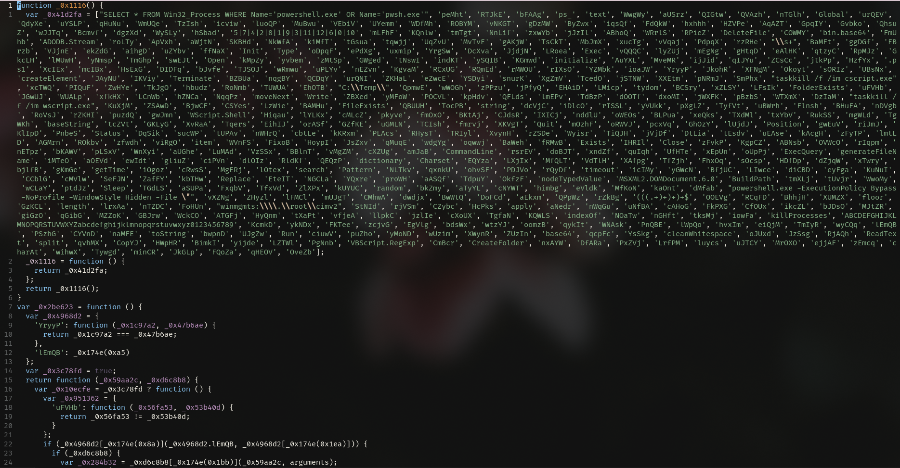
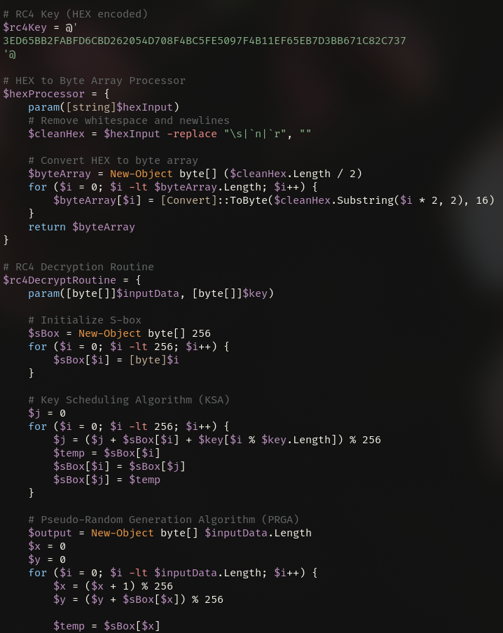
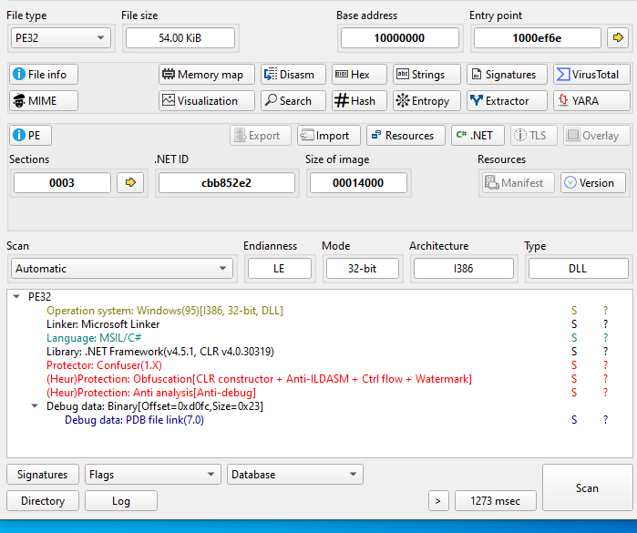
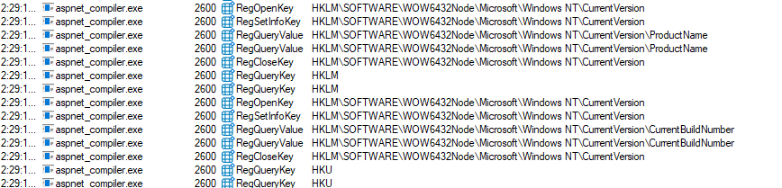
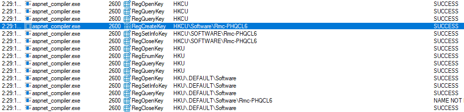
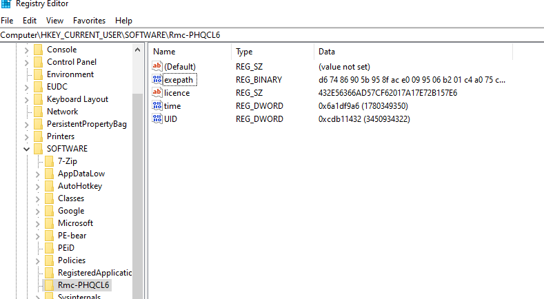
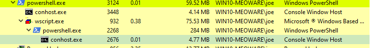
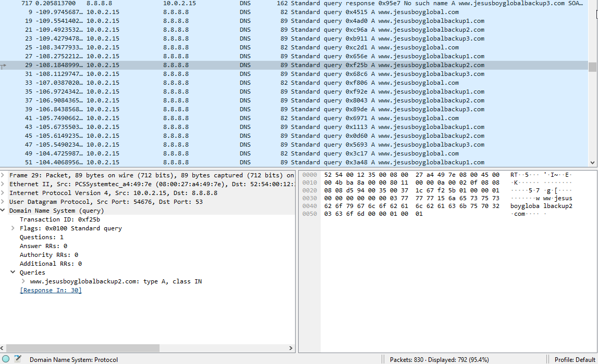

Multi-Stage JScript Dropper Delivering Remcos RAT via ConfuserEx-Obfuscated .NET Loader

| MD5 | 39ee91f412ffd1e5fbad78f72c73933c |
| SHA-1 | 13197b28078262d1a86a866d2e75566b10c2fb25 |
| SHA-256 | baa8f1b88835077909bb98bed0a5c61a765cdbd82dba44f0a5fffb9e64b1e868 |
| File name | quote.js |
| File info | JavaScript source, ASCII text, with very long lines (65536), with no line terminators |
| MIME | application/javascript |
Executive Summary
I examined a multi-stage malware dropper delivered via a malicious email attachment containing a Windows Script Host (WSH) JScript file. The sample employs five discrete obfuscation and delivery stages, ultimately deploying Remcos RAT (Remote Control & Surveillance) into a hollowed aspnet_compiler.exe process.
The loader component is a ConfuserEx-protected .NET assembly (WWOMEN.dll), it handles LZMA decompression and process hollowing; Remcos is the LZMA-compressed payload delivered into the hollowed image. C2 communications use DNS, with a primary domain and three pre-registered backup domains confirming deliberate infrastructure resilience planning.
The dropper chain progresses as follows:
flowchart TD A["Stage 1: JScript Dropper (.js)"] B["Stage 2: PowerShell RC4 Utility"] C["Stage 3: PowerShell XOR + Injector"] D["Stage 4: Base64-encoded .NET PE"] E["Stage 5: WWOMEN.dll"] F["Stage 6: Remcos RAT"] A -->|"Base64 Decode"| B B -->|"RC4 Decrypt"| C C -->|"XOR Decrypt + Base64 Decode"| D D -->|"Assembly.Load"| E E -->|"Process Hollowing + DNS Beacon"| F
The layered encryption (RC4 over XOR over Base64) is common in Remcos delivery campaigns1, where threat actors wrap the off-the-shelf RAT in custom loaders to defeat signature-based detections targeting known Remcos packers. The use of aspnet_compiler.exe as a hollowing target is a deliberate evasion choice as the binary is Microsoft-signed and commonly whitelisted in enterprise environments.
Stage Analysis
Stage 1: JScript Dropper

The initial file is a single-line, ~200 KB JScript payload obfuscated using a string-array/resolver pattern (_0x1116() / _0x174e()), a technique common among commodity dropper builders and crimeware toolkits. Deobfuscation reveals a structured dropper leveraging the Windows Script Host COM automation surface:
Abused COM objects:
ADODB.Stream: binary data handling and disk writesScripting.FileSystemObject: file and path operationsWScript.Shell: process execution and registry access
Behavioral indicators:
- A 4.94 MB Base64 string stored in
PayloadProcessor.baseStringconstitutes the embedded Stage 2 payload - WMI queries enumerate running
powershell.exe/pwsh.exeinstances. - Cleanup logic invokes
taskkillagainst prior instances and removes artifacts underC:\Temp\
The overall structure suggests the dropper was generated by a builder framework rather than hand-authored. the resolver pattern and functional decomposition are consistent with tools such as JScript/VBScript obfuscators.
Stage 2: PowerShell RC4 Utility
Decoding PayloadProcessor.baseString from Base64 yields a 14,680-line PowerShell script. The script’s sole purpose is to RC4-decrypt an embedded ciphertext and execute the result. The verbose line count is consistent with junk code padding used to increase analysis friction and evade line-count-based heuristics.
Decode Base64
import base64
with open('/tmp/malware/deobfuscated.js', 'r') as f:
content = f.read()
import re
m = re.search(r"baseString\s*=\s*'([^']+)'", content)
b64_data = m.group(1)
decoded = base64.b64decode(b64_data).decode('utf-8', errors='replace')
with open('/tmp/malware/full_decoded.txt', 'w') as out:
out.write(decoded)
Key artifacts:
| Artifact | Value |
|---|---|
| RC4 key (hex) | 3ED65BB2FABFD6CBD262054D708F4BC5FE5097F4B11EF65EB7D3BB671C82C737 |
| Ciphertext | 58,712 hex characters (29,356 bytes) |
| Storage format | PowerShell here-string (@' ... '@) |
The RC4 implementation is standard (KSA + PRGA). The hex-encoded key is 256 bits.
Stage 3: PowerShell XOR Injector
RC4 decryption yields a compact 131-line PowerShell script. This script performs XOR decryption of the final payload and executes it in-process via [System.Reflection.Assembly]::Load().
RC4 Decryption Code
import binascii, re
with open('/tmp/malware/full_decoded.txt', 'r', encoding='utf-8', errors='replace') as f:
content = f.read()
# Extract ciphertext and key
m = re.search(r'\$cipherData = @\'(.*?)\'@', content, re.DOTALL)
hex_data = m.group(1).strip().replace('\n', '').replace('\r', '')
m2 = re.search(r'\$rc4Key = @\'(.*?)\'@', content, re.DOTALL)
key_hex = m2.group(1).strip()
cipher = binascii.unhexlify(hex_data)
key = binascii.unhexlify(key_hex)
# RC4 algorithm
S = list(range(256))
j = 0
for i in range(256):
j = (j + S[i] + key[i % len(key)]) % 256
S[i], S[j] = S[j], S[i]
i = j = 0
output = bytearray()
for byte in cipher:
i = (i + 1) % 256
j = (j + S[i]) % 256
S[i], S[j] = S[j], S[i]
k = S[(S[i] + S[j]) % 256]
output.append(byte ^ k)
with open('/tmp/malware/rc4_decrypted.txt', 'wb') as f:
f.write(output)Component inventory:
| Component | Description |
|---|---|
$MasterKey | XOR passphrase: SKIDOvik56@@ |
$encryptedPayload | Base64-encoded, XOR-encrypted PE blob |
Unprotect-XORData | XOR decryption routine keyed to $MasterKey |
Execute-DynamicAssembly | Reflective loader; calls WWOMEN.EXECUTE.LAUNCH post-load |
Invoke-PerpetualMonitoring | Watchdog loop monitoring aspnet_compiler PID |
| Inline PE stub | Raw MZ header bytes embedded as a byte array |
The Invoke-PerpetualMonitoring function is notable: it implies the final payload may be re-injected if the hollowed process dies, indicating a persistence-oriented design rather than a single-execution payload delivery model.
A snippet from the decrypted rc4 powershell code
# Assembly Execution Handler - Alternative Version
function Execute-DynamicAssembly {
param(
[Byte[]]$BinaryData,
[string]$TypeName,
[string]$MethodName,
[object[]]$Parameters
)
process {
try {
# Load binary as assembly
$loadedAssembly = [System.Reflection.Assembly]::Load($BinaryData)
# Get target type
$targetType = $loadedAssembly.GetType($TypeName)
# Configure binding attributes
$bindingAttributes = [System.Reflection.BindingFlags]::Public -bor [System.Reflection.BindingFlags]::Static
# Get target method
$targetMethod = $targetType.GetMethod($MethodName, $bindingAttributes)
if (-not $targetMethod) {
Write-Warning "Method '$MethodName' not found in type '$TypeName'"
return $null
}
# Invoke static method
return $targetMethod.Invoke($null, $Parameters)
}
catch {
Write-Error "Dynamic execution error: $($_.Exception.Message)"
return $null
}
}
}
# Process Status Check - Alternative Implementation
function Test-ProcessAbsent {
param([string]$ProcessName)
$processQuery = Get-Process -Name $ProcessName -ErrorAction SilentlyContinue
return (-not $processQuery)
}
# Primary monitoring routine - Alternative Version
function Invoke-PerpetualMonitoring {
param(
[string]$TargetProcess = "aspnet_compiler",
[int]$IntervalSeconds = 5
)
# XOR encryption key - MUST MATCH C# ENCRYPTION KEY
$MasterKey = "SKIDOvik56@@"Stage 4: XOR-Decrypted PE
Applying XOR with key SKIDOvik56@@ to the Base64-decoded payload produces a 55,296-byte (54 KB) PE file. The file header is confirmed valid (MZ magic, PE\x00\x00 signature).
XOR Decryption
import base64, re
def xor_decrypt(encoded_text, passphrase):
encoded_bytes = base64.b64decode(encoded_text)
pass_bytes = passphrase.encode('utf-8')
output = bytearray()
for i, b in enumerate(encoded_bytes):
output.append(b ^ pass_bytes[i % len(pass_bytes)])
return bytes(output)
with open('/tmp/malware/rc4_decrypted.txt', 'r', encoding='utf-8') as f:
content = f.read()
m = re.search(r"\$encryptedPayload = '([^']+)'", content)
encrypted_payload = m.group(1)
xor_decrypted = xor_decrypt(encrypted_payload, 'SKIDOvik56@@')
# The result is Base64-encoded PE
pe_bytes = base64.b64decode(xor_decrypted)
with open('/tmp/malware/assembly.bin', 'wb') as f:
f.write(pe_bytes)
print(f"PE Size: {len(pe_bytes)} bytes")
print(f"Magic: {pe_bytes[:2]}")
PE attributes:
| Attribute | Value |
|---|---|
| Type | PE32, DLL |
| Architecture | Intel i386 |
| Subsystem | Mono/.NET assembly |
| Sections | .text, .rsrc, .reloc |
| Machine | 0x014C (i386) |
| CLR Header RVA | 0x2008, size 72 bytes |
| CLR Runtime | v2.5 (header-declared) |
| Metadata offset | 0x5928 (BSJB signature) |
Stage 5: .NET Assembly: WWOMEN.dll
Identity
| Attribute | Value |
|---|---|
| Assembly name | WWOMEN.dll |
| PDB path | WWOMEN.pdb |
| Namespace / Class / Method | WWOMEN.EXECUTE.LAUNCH |
| Version | 1.0.0.0 |
| Target framework | .NET Framework 4.5.1 |
| Copyright | Copyright © 2026 |
| GUID | e8db206e-2fda-4080-a9ac-440b1ec3d067 |
| Obfuscator | ConfuserEx 1.6.0 (447341964f) |
Obfuscation Techniques
The assembly employs several ConfuserEx 1.6.0 anti-analysis protections:
1. CLI Header suppression. The PE data directory entry 15 (COM Descriptor / CLI Header pointer) is zeroed, causing standard .NET loaders and analysis tools to misidentify the file as unmanaged. The actual COM descriptor resides at RVA 0x2008 and must be located manually.
2. Metadata stream hiding. The BSJB metadata header reports num_streams = 0. Stream headers for #~, #Strings, #GUID, and #Blob are present in the file but unreferenced, requiring manual offset recovery:
| Stream | Offset | Size |
|---|---|---|
#~ (metadata tables) | 0x60 | 0x13AC |
#Strings | 0x140C | 0x5DEC |
#GUID | 0x71F8 | 0x10 |
#Blob | 0x7208 | 0x594 |
3. FieldRVA poisoning. 54 FieldRVA table entries reference invalid RVA values (e.g., 0x00000011, 0x00010000, 0x00060000). This technique hides the embedded LZMA-compressed payload from automated extractors that rely on FieldRVA to locate static field data.
4. ManifestResource suppression. The ManifestResource metadata table reports 0 rows, concealing any embedded resources from standard .NET reflection.
Capability Assessment
String reconstruction from the metadata #Strings heap reveals two primary functional clusters:
LZMA Decompression Engine
The assembly contains a pure-.NET LZMA decompressor. The LZMA implementation decompresses an embedded payload at runtime, the contents of which remain encrypted behind the FieldRVA obfuscation and require dynamic analysis or ConfuserEx deobfuscation to recover.
Process Hollowing Engine
The injection subsystem targets C:\Windows\Microsoft.NET\Framework\v4.0.30319\aspnet_compiler.exe. Recovered identifiers map to the standard process hollowing API sequence.
Native API resolution occurs at runtime through Marshal.GetDelegateForFunctionPointer against kernel32 exports resolved via LoadLibraryA / GetProcAddress, avoiding static import table entries. An AssemblyResolve hook (add_AssemblyResolve) suggests additional assemblies may be loaded from the LZMA payload at runtime.
The hollowing target aspnet_compiler.exe is a Microsoft-signed binary present on any system with .NET Framework installed. Its use is a deliberate evasion decision: security products commonly whitelist it, and its network activity or child processes are less likely to trigger behavioral detections.
Dynamic Analysis
aspnet_compiler.exe performs basic system reconnaissance by checking the computer name. It also queries registry keys to obtain system configuration information. These actions correspond to MITRE ATT&CK techniques T1082 (System Information Discovery) and T1012 (Query Registry).

The malware creates and accesses the registry key HKEY_CURRENT_USER\SOFTWARE\Rmc-PHQCL6, a known artifact associated with Remcos RAT. its presence can serve as a host based indicator of compromise (IOC) for Remcos infections.


The stage 1 spawns a PowerShell process to continue execution of the next stage.

Wireshark analysis identified DNS queries to domains associated with the malware infrastructure. These requests indicate an attempt to locate command-and-control resources and may represent the initial stage of outbound C2 communications.

Threat Assessment
Malware Family Identification
The final payload delivered via process hollowing has been identified as Remcos RAT (Remote Control & Surveillance), a commercial remote access tool developed by BreakingSecurity. Remcos is sold legitimately as a remote administration product but is extensively abused by threat actors across due to its rich feature set, active development, and relatively low cost.
Remcos RAT capabilities relevant to this intrusion include:
| Capability | Description |
|---|---|
| Keylogging | Full keystroke capture with configurable log flushing to C2 |
| Screen capture | Periodic or on-demand screenshot exfiltration |
| Webcam / microphone | Remote activation of AV/audio capture |
| File manager | Remote browse, upload, download, delete |
| Process / service manager | Remote process kill, service enumeration |
| Shell access | Reverse shell / remote command execution |
| Credential theft | Browser credential harvesting (Chrome, Firefox, IE) |
| Clipboard monitoring | Clipboard content interception |
| DNS C2 | Configurable primary + backup domain failover |
| Persistence | Registry run key, scheduled task, startup folder |
The use of DNS for C2 is a documented Remcos configuration option. The four-domain failover pattern is consistent with Remcos builder output, where operators specify backup hosts at build time and the client iterates through them on connection failure.
The WWOMEN.dll loader wrapping Remcos, and the multi-stage JScript to PowerShell delivery chain, are operator-added layers not part of the Remcos package itself. This indicates the threat actor invested in custom delivery infrastructure to defeat AV/EDR detections targeting known Remcos file signatures and packers.
Attribution Indicators
The GUID e8db206e-2fda-4080-a9ac-440b1ec3d067 embedded in the assembly metadata may function as a campaign identifier or C2 handler discriminator. This value should be queried against known malware repositories and threat intelligence platforms (VirusTotal, MalwareBazaar, Recorded Future) to identify related samples or campaigns.
The assembly name WWOMEN is distinctive and may yield additional pivots across infrastructure or code repositories if the same developer reused it across campaigns.
Evasion Sophistication
The dropper chain demonstrates above-average evasion investment:
- Five-stage encrypted delivery (Base64 -> RC4 -> XOR -> reflective load) makes static extraction non-trivial
- ConfuserEx obfuscation with multiple anti-analysis features requires deobfuscation tooling (de4dot or similar) before meaningful .NET analysis
- Living-off-the-land binary (
aspnet_compiler.exe) as hollowing target complicates process-based detections - WMI-based process enumeration and cleanup logic suggest awareness of sandbox environments
- Junk-padded PowerShell (14,680 lines) increases noise and may exceed line-count limits in some security logging configurations
Coverage Gaps
- LZMA payload identified as Remcos RAT. The LZMA-compressed payload decompressed and injected by
WWOMEN.dllis confirmed as Remcos RAT. Full configuration extraction (C2 port, beacon interval, build tag, enabled modules) requires de4dot deobfuscation ofWWOMEN.dllfollowed by runtime config parsing against the Remcos config block format.
Indicators of Compromise
File Indicators
| Type | Value |
|---|---|
| SHA-256 (JS dropper) | baa8f1b88835077909bb98bed0a5c61a765cdbd82dba44f0a5fffb9e64b1e868 |
| SHA-256 (Assembly) | 940967270a0b8003bfa978ae80b9166dd12a85e4463af1418976e4bcd47ba702 |
| Assembly name | WWOMEN.dll |
| PDB path | WWOMEN.pdb |
| Assembly GUID | e8db206e-2fda-4080-a9ac-440b1ec3d067 |
| Obfuscator build | Confuser.Core 1.6.0+447341964f |
| Target framework | .NET Framework 4.5.1 |
| Registery Key | HKEY_CURRENT_USER\SOFTWARE\Rmc-PHQCL6 |
Cryptographic Material
| Type | Value |
|---|---|
| RC4 key (hex) | 3ED65BB2FABFD6CBD262054D708F4BC5FE5097F4B11EF65EB7D3BB671C82C737 |
| XOR passphrase | SKIDOvik56@@ |
Network Indicators
| Type | Value | Role |
|---|---|---|
| DNS | www.jesusboyglobal.com | Primary C2 |
| DNS | www.jesusboyglobalbackup1.com | Backup C2 (1) |
| DNS | www.jesusboyglobalbackup2.com | Backup C2 (2) |
| DNS | www.jesusboyglobalbackup3.com | Backup C2 (3) |
The domain naming convention is a deliberate resilience pattern. The operator pre-registered fallback infrastructure to maintain C2 availability in the event the primary domain is sinkholed or null-routed. This pattern is consistent with commodity RAT frameworks that implement a domain failover loop at beacon time.
All four domains should be treated as equally high-confidence IOCs and blocked at the DNS resolver, proxy, and firewall layers simultaneously. Blocking only the primary while leaving the backups active provides negligible protection.
Behavioral Indicators
| Type | Value |
|---|---|
| Hollowing target | C:\Windows\Microsoft.NET\Framework\v4.0.30319\aspnet_compiler.exe |
| Working directory | C:\Temp\ |
| WMI query targets | powershell.exe, pwsh.exe |
| Cleanup method | taskkill against prior instances |
| Persistence artifact type | .ps1 files written to disk |
MITRE ATT&CK Mapping
Techniques are mapped to ATT&CK for Enterprise v15. Confidence ratings reflect the strength of evidence from static analysis alone; techniques marked Inferred require dynamic confirmation.
Tactic Coverage
| Tactic | Techniques Observed |
|---|---|
| Initial Access | T1204.002 |
| Execution | T1059.001, T1059.007, T1106, T1204.002 |
| Persistence | T1547 |
| Defense Evasion | T1027.001, T1027.002, T1027.010, T1036.003, T1055.012, T1140, T1620 |
| Discovery | T1057, T1012, T1082, T1083 |
| Command & Control | T1071.004, T1008 |
Technique Detail
T1204.002: User Execution: Malicious File
Stage: 1 | Confidence: High
The initial infection vector is a .js file executed via Windows Script Host (wscript.exe / cscript.exe). The user must execute the file directly, or it is launched through a delivery mechanism (email attachment, drive-by, archive) not recovered in this sample. WSH JScript is a long-standing initial access vehicle due to its native availability on all Windows systems.
T1059.007: Command and Scripting Interpreter: JavaScript
Stage: 1 | Confidence: High
The dropper is authored in JScript and executed natively by wscript.exe. The script abuses ActiveXObject instantiation to access ADODB.Stream, Scripting.FileSystemObject, and WScript.Shell without invoking any external binaries at Stage 1.
T1059.001: Command and Scripting Interpreter: PowerShell
Stages: 2, 3 | Confidence: High
Stages 2 and 3 are PowerShell scripts. Stage 2 (14,680 lines) performs RC4 decryption; Stage 3 (131 lines) performs XOR decryption and reflective .NET assembly loading. Both scripts are executed in-memory, consistent with -EncodedCommand or IEX-style invocation from the Stage 1 dropper to avoid writing PowerShell to disk.
T1027.010: Obfuscated Files or Information: Command Obfuscation
Stage: 1 | Confidence: High
The JScript dropper uses a string-array/resolver obfuscation pattern (_0x1116() / _0x174e()) that fragments all string literals into indexed array lookups. This is a well-known obfuscation technique generated by tools such as javascript-obfuscator and consistently defeats naive string-based YARA signatures.
T1027.001: Obfuscated Files or Information: Binary Padding
Stage: 2 | Confidence: Medium
The Stage 2 PowerShell script is 14,680 lines for a functionally trivial RC4 decrypt-and-execute operation. The excess bulk is consistent with junk code or dead code padding, a technique used to inflate file size, degrade analyst productivity, and potentially exceed SIEM script block logging limits.
T1140: Deobfuscate/Decode Files or Information
Stages: 1, 2, 3 | Confidence: High
Each stage decodes its successor at runtime: Stage 1 Base64-decodes Stage 2; Stage 2 RC4-decrypts Stage 3; Stage 3 XOR-decrypts and Base64-decodes the final PE. All decryption is performed in-memory without intermediate disk writes (beyond Stage 1’s initial drop), consistent with fileless payload delivery.
T1027.002: Obfuscated Files or Information: Software Packing
Stage: 5 | Confidence: High
WWOMEN.dll is protected with ConfuserEx 1.6.0, a widely used open-source .NET obfuscator. The specific protections observed (CLI header suppression, metadata stream hiding, and FieldRVA poisoning) correspond to ConfuserEx’s anti-tamper and anti-dump modes. Standard .NET decompilers (dnSpy, ILSpy) cannot parse the assembly without prior deobfuscation.
T1620: Reflective Code Loading
Stage: 3 | Confidence: High
Stage 3 loads WWOMEN.dll entirely in memory via [System.Reflection.Assembly]::Load() and invokes WWOMEN.EXECUTE.LAUNCH through reflection. The assembly never touches disk as a standalone file; it exists only within the PowerShell process memory space prior to hollowing.
T1106: Native API
Stage: 5 | Confidence: High
WWOMEN.dll resolves Windows native APIs at runtime using LoadLibraryA / GetProcAddress and binds them to .NET delegates via Marshal.GetDelegateForFunctionPointer. This avoids static import table entries that would be visible to PE analysis tools and signatures. APIs targeted include the standard process hollowing sequence (VirtualAllocEx, WriteProcessMemory, SetThreadContext, ResumeThread).
T1055.012: Process Injection: Process Hollowing
Stage: 5 | Confidence: High
WWOMEN.dll implements process hollowing targeting aspnet_compiler.exe (C:\Windows\Microsoft.NET\Framework\v4.0.30319\). The standard hollowing sequence is evidenced by recovered string identifiers: CreateProcess (suspended), memory allocation, WriteProcessMemory, context manipulation, and thread resumption. The LZMA-decompressed payload is written into the hollowed process image.
T1036.003: Masquerading: Rename System Utilities
Stage: 5 | Confidence: Medium (Inferred)
aspnet_compiler.exe is a legitimate, Microsoft-signed .NET Framework binary. The hollowed process presents as a trusted Microsoft utility to process-listing tools, AV products, and EDR behavioral engines. This is functionally equivalent to renaming or impersonating a system utility, though achieved through hollowing rather than file rename.
T1057: Process Discovery
Stage: 1 | Confidence: High
The Stage 1 dropper issues WMI queries to enumerate running powershell.exe and pwsh.exe instances. This is consistent with sandbox detection (checking for analyst tooling), prior-instance deduplication, or targeting decisions prior to payload delivery.
T1071.004: Application Layer Protocol: DNS
Stage: 5 | Confidence: High
Dynamic analysis recovered four DNS queries issued by the implant post-hollowing. The use of DNS as the C2 transport is a deliberate evasion choice: DNS traffic is rarely blocked outright in enterprise environments, is frequently excluded from deep packet inspection, and blends with legitimate resolver traffic. The specific DNS-based protocol (TXT record beaconing, DNS tunneling, or A/AAAA resolution for IP retrieval) requires full traffic capture to characterize.
T1008: Fallback Channels
Stage: 5 | Confidence: High
The implant queries a primary domain (www.jesusboyglobal.com) and three sequentially named backup domains (jesusboyglobalbackup1–3.com). This is a purpose-built failover pattern: if the primary C2 is sinkholed, null-routed, or otherwise unreachable, the implant iterates through the backup pool. Pre-registration of numbered backup domains under the same base name is a well-documented resilience technique in commodity RAT families (AsyncRAT, NjRAT, QuasarRAT) and suggests the operator anticipated defensive takedown actions. All four domains carry equal operational significance and must be blocked simultaneously to be effective.
T1082: System Information Discovery
Stage: 5 | Confidence: High
The Stage 5 payload retrieves the computer name and enumerates supported system language settings to gather information about the infected host. This information may be used for victim profiling, operator awareness, or execution decisions based on the target environment.
T1012: Query Registry
Stage: 5 | Confidence: High
The Stage 5 payload queries registry data, including the Remcos-associated key HKEY_CURRENT_USER\SOFTWARE\Rmc-PHQCL6. This activity is consistent with accessing malware configuration data, checking execution state, or identifying a previously established Remcos installation.
ATT&CK Full Technique Table
| Tactic | Technique ID | Technique Name | Stage |
|---|---|---|---|
| Initial Access | T1204.002 | User Execution: Malicious File | 1 |
| Execution | T1059.007 | Command and Scripting Interpreter: JavaScript | 1 |
| Execution | T1059.001 | Command and Scripting Interpreter: PowerShell | 2, 3 |
| Execution | T1106 | Native API | 5 |
| Persistence | T1547 | Boot or Logon Autostart Execution | 1 |
| Defense Evasion | T1027.010 | Obfuscated Files or Information: Command Obfuscation | 1 |
| Defense Evasion | T1027.001 | Obfuscated Files or Information: Binary Padding | 2 |
| Defense Evasion | T1140 | Deobfuscate/Decode Files or Information | 1, 2, 3 |
| Defense Evasion | T1027.002 | Obfuscated Files or Information: Software Packing | 5 |
| Defense Evasion | T1620 | Reflective Code Loading | 3 |
| Defense Evasion | T1055.012 | Process Injection: Process Hollowing | 5 |
| Defense Evasion | T1036.003 | Masquerading: Rename System Utilities | 5 |
| Discovery | T1057 | Process Discovery | 1 |
| Command & Control | T1071.004 | Application Layer Protocol: DNS | 5 |
| Command & Control | T1008 | Fallback Channels | 5 |
| Discovery | T1012 | Query Registry: Reads the computer name | 5 |
| Discovery | T1012 | Query Registry: Checks supported languages | 5 |
| Discovery | T1082 | System Information Discovery: Reads the computer name | 5 |
| Discovery | T1082 | System Information Discovery: Checks supported languages | 5 |
Defense Evasion is the most heavily represented tactic. This is consistent with a custom loader whose primary design objective is delivering a known commodity (Remcos RAT) without triggering detections targeting its well documented file signatures. the operator’s investment is in the delivery chain, not the implant itself.